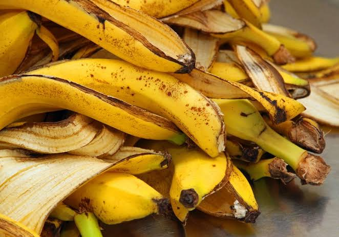
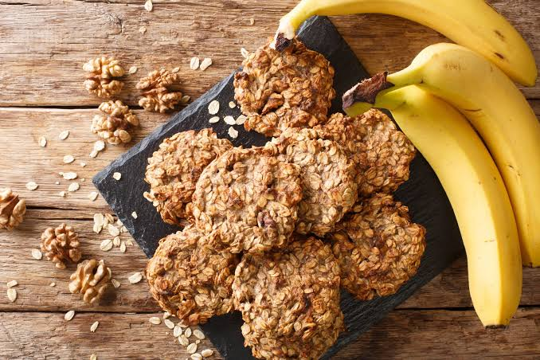

Adubando suas plantas com Casca de Banana
Detalhes
Adubo com Casca de Banana
Ingredientes:
• 5 cascas de banana;
• 1,5 litro de água;
• 1 garrafa de plástico (com capacidade de 1 litro);
• 1 panela.
Modo de preparo:
Pique as cascas em pedaços pequenos e coloque-as em uma panela com 1 litro de água. Leve a panela ao fogo por 15 minutos. Ao final do tempo, desligue o fogo e deixe a água esfriar. Quando a água estiver fria, coe e reserve. As cascas podem ir para a sua composteira. Agora adicione à água mais 500 ml e guarde na garrafa de plástico. Na hora de usar o adubo nas plantas ele deve ser misturado na seguinte proporção: 1 parte de adubo para 5 partes de água. E faça a adubação somente uma vez por semana.
Pronto!

Cookie de Casca de Banana e Batata
Detalhes
Cookie
Ingredientes:
• 1 ½ xícara de farinha de trigo
• Cascas de 2 batatas bem lavadas e cortadas em pedaços
• Cascas de 2 bananas maduras bem lavadas e cortadas em pedaços
• 1 xícara de aveia
• 1 xícara de açúcar demerara ou comum
• 3 xícaras de óleo vegetal
• 1 colher de fermento em pó para bolo
• 1 colher de canela em pó
• ½ colher de sal
• 1 ½ xícara de água filtrada
Modo de preparo:
Coloque as cascas de bananas na tigela com meia xícara de água. Leve ao forno de micro-ondas, na potência máxima, cozinhe por 2 min, ou até as cascas ficarem bem moles.Triture juntos as cascas de bananas cozidas, as cascas de batatas cruas, açúcar e 1 xícara de café de água. Triture até os pedaços das cascas ficarem bem pequenos.Peneire a farinha de trigo, o fermento, o sal e a canela em pó. Misture bem. Adicione o líquido triturado na mistura de farinha. Misture tudo. Unte a assadeira com óleo vegetal e farinha. Faça bolas de 1,5 cm de diâmetro. Coloque na assadeira com uma distância de 2 dedos. Molhe o dedo com a água e aperte em cima das bolas de massa para achatar. Leve ao forno preaquecido a 180 graus e asse por 20 a 25 min. até dourar. Espere esfriar e retire da assadeira.
Pronto!

Como deixar sua casa limpinha usando Casca de Laranja?
Detalhes
Spray de limpeza com Casca de Laranja
Ingredientes:
• Casca de Larnaja
• Vinagre
• Coador
• Água
• Frasco de spray
Tutorial:
Deixe as cascas de laranja de molho em vinagre por 2 semanas, coe, dilua com água e coloque em um frasco de spray.
Pronto, agora você tem um limpador caseiro!